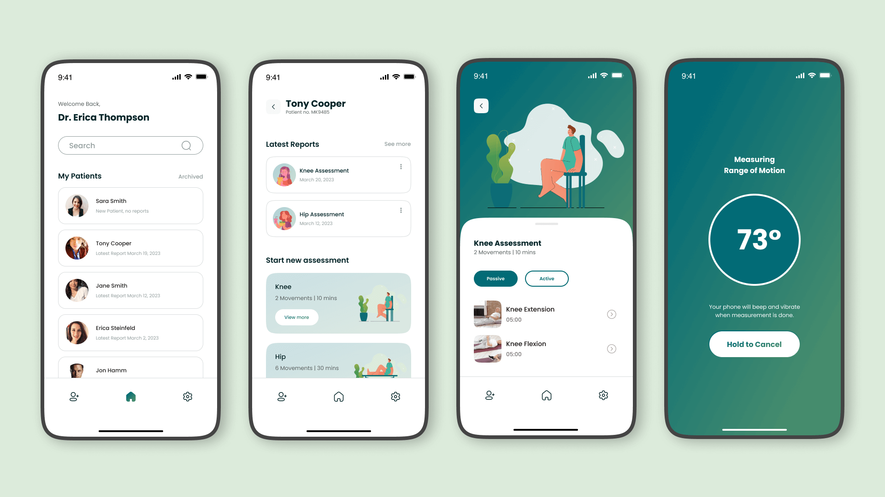
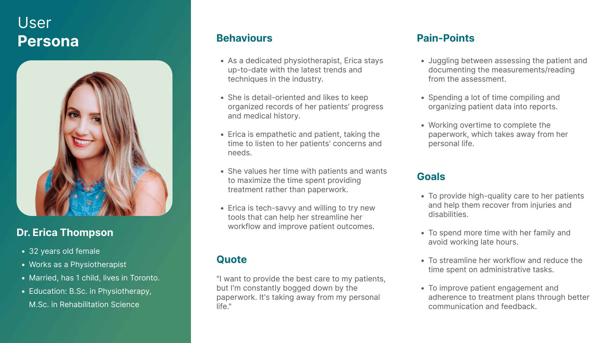
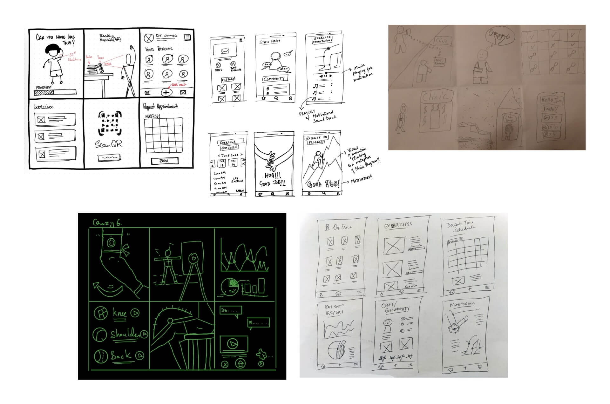
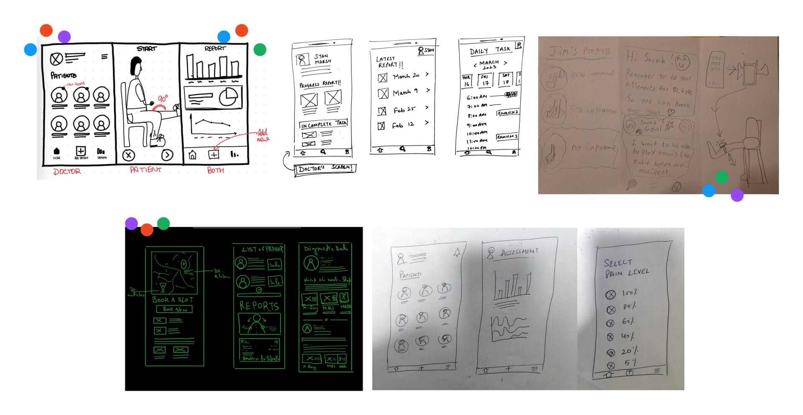
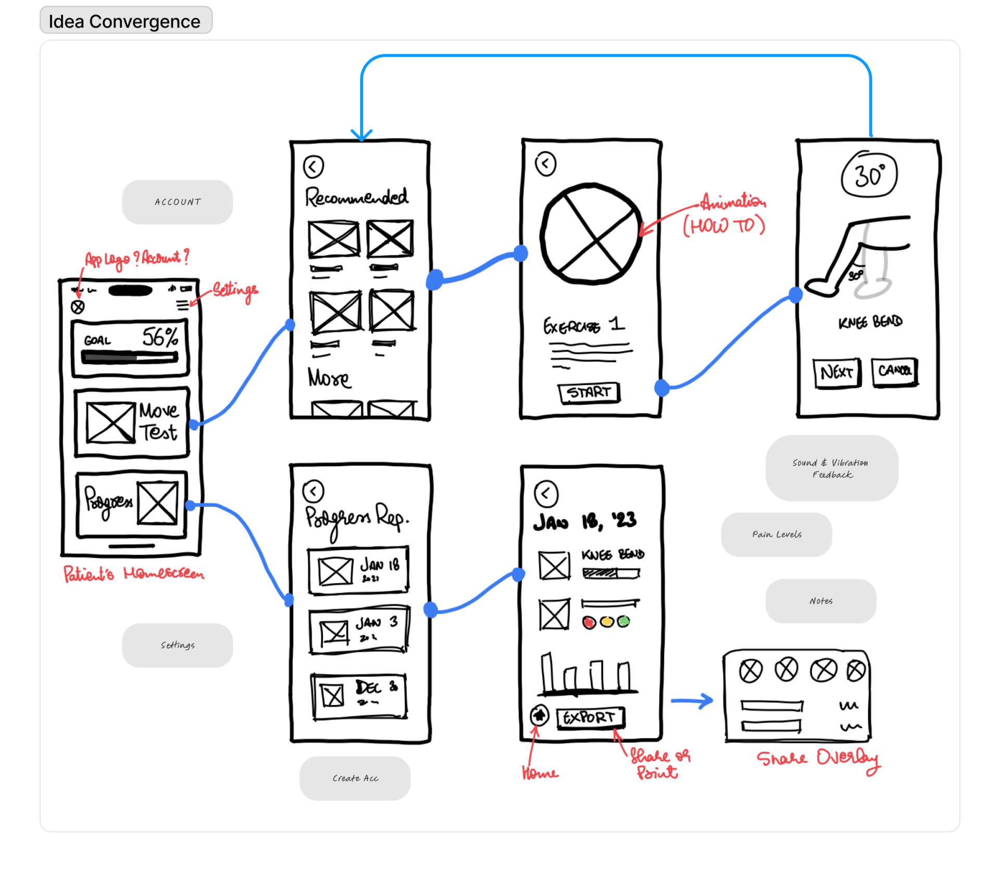
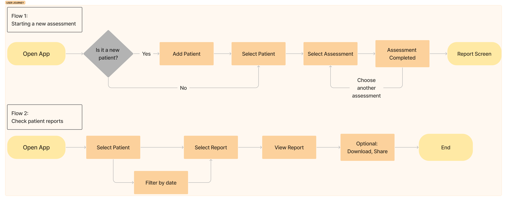
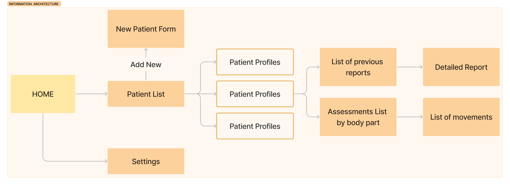
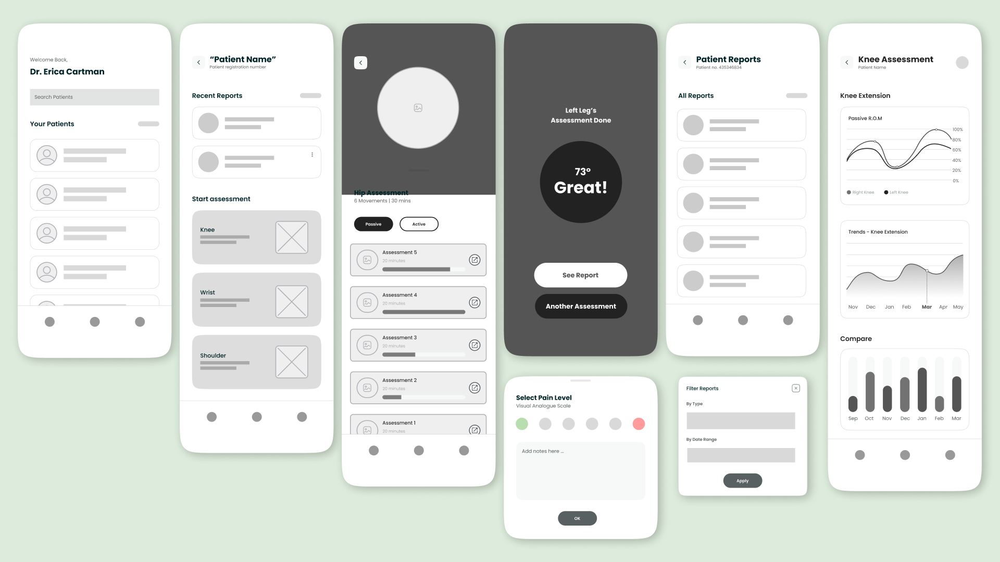

UX Case Study: Physmate, a Smart Goniometer App for Physiotherapists
April 17, 2023 • Utkarsh Singh
Overview
Physiotherapists often use goniometers to measure joint range of motion (R.O.M.) in their patients. However, this manual process can be time-consuming and prone to errors. To address this issue, we designed Physmate, a mobile app that offers an easy and accurate way to measure and record R.O.M data.
Physmate is a smart goniometer app that utilizes the sensors on modern smartphones to measure joint movement accurately. It generates detailed reports that simplify the recording process for physiotherapists. With our app, therapists can save valuable time that would have been spent taking manual measurements and focus more on providing care to their patients.
In this case study, I will take you through our design process and how we created an intuitive and effective solution for physiotherapists.
Scope & Constraints
Physmate was a UX design project completed as part of the Interaction Design program at Conestoga College. Our team of 5 students had 5 weeks to design a prototype for a physiotherapy application. The scope of our project was limited to the design phase, including research, ideation, prototyping, and testing.
Roles and Responsibilities
What I did:
- Conducted user interviews and did empathy mapping.
- Collaborated with Prasanna on user flows and wireframes.
- Designed and created high-fidelity mock-ups and the final prototype.
- Presented the final design to stakeholders along with Prasanna and Alex.
I was privileged to work alongside a highly capable team, consisting of Prasanna, Alex, Deepti, and Mubeen. Together, we conducted extensive research, including user interviews, secondary research, and competitive analysis. We met regularly to discuss our findings and plan our next steps.
As we moved into the prototype phase, we divided responsibilities. Prasanna and I worked on wireframes, while Deepti and Mubeen focused on branding and user testing. I then took on the responsibility of creating high-fidelity mockups and the final prototype. Meanwhile, Alex, Deepti, and Prasanna worked on compiling research, creating the stakeholder presentation, and the design process book.
Throughout the project, we maintained open communication and assisted each other as needed. Our team had excellent synergy, and everyone contributed 100% effort to the project. Finally, Prasanna, Alex and I presented our design to the stakeholders.
The Problem
Through the interviews we conducted with practicing physiotherapists, we learnt about one of their biggest pain points:
- Physiotherapists constantly need to juggle between assessing the patient and noting down the measurements and readings from the assessment.
- Later, they have to spend a considerable amount of time compiling and organizing this data into reports, often requiring them to stay late to complete paperwork.
Based on these research insights, we defined the problem statement.

Users and Audience
The primary users of Physmate are physiotherapists, who are responsible for helping people affected by injury, illness or disability through movement and exercise, manual therapy, education and advice.
Secondary users include patients who will benefit from the efficient assessment and treatment process provided by Physmate. The audience for this product includes physiotherapy clinics and hospitals where physiotherapy is practiced.
Research
In order to gain a deeper understanding of the problem space and user needs, we conducted various research activities. Our research focused on identifying the pain points of physiotherapists, understanding the needs of physiotherapy patients, and analyzing the competitive landscape of existing mobile apps in the physiotherapy space.
Research Methods
To gather insights, we used the following methods:
- Interviews with Physiotherapy Patients and Practitioners: We conducted in-depth interviews with 5 physiotherapy patients and 2 practicing physiotherapists to understand their experiences, pain points, and needs. We asked open-ended questions and encouraged them to share their thoughts and feelings about the physiotherapy process.
- Online Research: We did online research to gain an understanding of how physiotherapy works in Ontario, the regulations around the practice, and the challenges faced by patients and practitioners.
- Competitive Analysis: We analyzed the mobile apps available in the physiotherapy space to identify their strengths, weaknesses, and features.
- User Testing: We conducted user testing with our prototype to gather feedback and insights from potential users.
Key Research Insights:
Pain points for physiotherapists:
- The need to constantly juggle between assessing patients and documenting data
- The time-consuming nature of creating reports based on assessment data
- Late-night work hours due to paperwork overload
Other Important Insights:
- Passive range of motion is a key indicator of a patient's progress.
- Patients who have a better understanding of their treatment and progress are more likely to do their at home exercises and recover faster.
Competitor Analysis
Physmate stands out from the rest as it offers a solution for use by physiotherapists in clinics.
In order to validate the technical feasibility of our design and identify our niche, we examined various top physiotherapy apps in the market. Most of the apps focused on offering exercise programs for remote physiotherapy, with some providing self-assessment tools for patients to send to physiotherapists. We identified two products that were similar enough to our app to be considered as competitors:
- Mira
A gamified video physiotherapy exercise tool that allows for video range of motion assessments to be done.
* Requires additional sensors. - Exer
An at-home physiotherapy tool that uses Augmented Reality for patient self-assessment.
* Requires correct camera placement.
However, these products do not specifically target physiotherapists as their primary users. Physmate, on the other hand, offers a solution specifically designed for use by physiotherapists in clinics. This sets us apart from our competitors and gives us our niche in the market. We believe that this market is underserved and we can provide great value to professionals in the field.
Technology Validation through Secondary Research
To validate our app's technical feasibility, we conducted secondary research that led us to two relevant research papers:
- 'Reliability and validity of clinically accessible smartphone applications to measure joint range of motion: A systematic review'
- 'Mobile Smartphone Applications for Body Position Measurement in Rehabilitation: A Review of Goniometric Tools'
These research papers concluded that smartphone-based digital goniometers are accurate enough to replace standard goniometers used by clinicians. The research, conducted on a range of devices, indicates that most modern smartphones have this capability. The review also confirmed a competent development team can create this tool without proprietary software, using only device hardware.
Design Process
Ideation
To generate ideas for the Physmate app, we conducted brainstorming exercises like Crazy 6s and 3-panel sketching.
Crazy 6s
During Crazy 6s, we generated multiple ideas, critiqued each other's proposals, and selected the most promising ones to proceed with.
3-Panel Sketches
We then used 3-panel sketching to further develop and refine our ideas.
Idea Convergence
Finally, we used dot voting to converge on the most promising idea to take forward for the design process.
User Flows
To ensure an intuitive user experience, we created user flows for Physmate. We began by mapping out the primary user journey, which involves the physiotherapist logging in, selecting the patient and the body part they wish to assess, performing the assessment, and generating a report. We then created secondary user flows to cover any additional features, such as adding new patients and reviewing previous assessments. By creating user flows, we were able to identify potential pain points in the user journey and make adjustments to create a more streamlined experience.
Information Architecture
We designed the information architecture of Physmate to be intuitive and easy to navigate. We began by identifying the primary features of the app, such as the ability to select a patient, select a body part, and perform an assessment. We then organized these features into a logical hierarchy to ensure that users can quickly and easily find what they need. We also included clear labels and icons to aid navigation and ensure a seamless user experience.
Wireframes
Using the information architecture as a guide, we created wireframes for Physmate. We began with low-fidelity wireframes to explore different layout options and ensure that the primary features of the app were included.
Test Early, Test Often (User Testing 1)
At this stage, we heeded our professor's advice to “test early, test often”. We recognized the importance of conducting user tests early on in the design process to identify areas of improvement and iterate quickly.
To conduct our usability tests, we enlisted the help of a physiotherapist to participate in the study. We used medium-fidelity wireframes to gather feedback. The physiotherapist provided valuable insights that we had not considered before, such as:
- The importance of tracking both active and passive range of motion in patient assessments, with passive ROM being crucial in assessing progress.
- The difficulty of taking notes while assisting patients with their assessments, and the subsequent challenge of compiling those notes into a report.
- The effectiveness of sending progress reports to patients to motivate them to continue their recovery journey.
- The industry standard scales used to measure pain levels.
To validate these insights, we spoke with another physiotherapist and discovered that the pain point of taking notes and compiling patient progress reports was indeed a big problem.
These insights were incredibly valuable to us as we moved forward with the design process, and helped us to improve the focus of the Physmate app.
Iterations based on user feedback
After receiving feedback from physiotherapists during our usability test, we realized that our initial focus on providing patients with self-assessment tools was not the most pressing need.
To make improvements early on in the design process, we decided to make some iterations to our problem statement and focus on providing a platform for physiotherapists instead of patients.
To generate new ideas, we conducted a Crazy 6 exercise and 3-panel brainstorming session. Afterward, we iterated on the wireframes based on the feedback we received.
As a result of this iteration phase, we shifted our primary user focus to physiotherapists. Our app was now designed to provide tools to physiotherapists to help them be more efficient in their work.
Visual Design
During the visual design phase, our team worked meticulously to develop a brand identity for Physmate that would resonate with the healthcare industry while evoking a soothing emotional response. We carefully curated a color palette comprising of various shades of green and infused it into our logo and user interface. These colors not only align with the healthcare industry but also evoke a sense of calm and tranquility.
Moreover, we ensured that our design was accessible to all users by following the Web Content Accessibility Guidelines (WCAG) AA standards. We gave special consideration to text sizes, contrasts, and colors to ensure that our design was easily readable by everyone. Although we were not able to achieve the AAA compliance, we made sure to incorporate the best possible color mix to enhance accessibility.
Final Design
After several iterations based on user feedback, we have finalized the screen mockups for PhysMate. These mockups showcase the different features and functionalities that we have incorporated into the app.
The main focus of the app is to provide physiotherapists with tools to manage their patients' recovery journey. The mockups show how the app allows physiotherapists to create and manage patient profiles, conduct assessments, track progress, and assign exercises.


User Testing 2
After finalizing the prototype, we conducted user testing to ensure the app was intuitive, user-friendly, and met the needs of both physiotherapists and patients. We conducted three usability tests and gained valuable insights into the user experience.
Areas for Improvement
- Hidden “Take New Assessment” page: Participants had to click through multiple pages to reach the core feature of the app. We need to make this feature more accessible.
- The “Add a New Patient” feature was not immediately clear to users, as the icon alone did not effectively convey its meaning. To improve this, we could consider adding a more prominent button or label for this feature.
- User flow: A user flow that allows assessments to be done first and assigned to patients later should be added.
Outcomes and Lessons
Our team has learned a lot from this project, and we are proud of the outcomes we achieved. Here are some of the key outcomes and lessons we learned:
Outcomes
- We developed a platform that provides a more efficient and user-friendly way for physiotherapists to manage their patients' recovery progress.
- Our app provides patients with a way to monitor their progress, set goals, and stay motivated throughout their recovery journey.
- We incorporated a soothing color palette and followed accessibility standards to ensure our design is inclusive and user-friendly.
- We conducted multiple rounds of user testing and made iterations to our design based on feedback to ensure the app meets the needs of both physiotherapists and patients.
- Our app has the potential to improve the recovery journey for patients and make the process more efficient for physiotherapists.
Lessons
- Conducting user research and testing is crucial to developing a successful app that meets the needs of users.
- It's important to be flexible and iterate on design based on feedback to ensure the app meets user needs.
- Accessibility standards are crucial to ensure the app is inclusive and user-friendly for everyone.
- Designing for the healthcare industry requires a careful balance of functionality and emotional response.
- Communication and collaboration within the team are key to developing a successful app.
Overall, we are proud of the outcomes we achieved and the lessons we learned throughout this project. We believe that PhysMate has the potential to make a positive impact on the recovery journey of patients and improve the efficiency of physiotherapists' work.
Conclusion
Looking ahead, there is still much potential for PhysMate to continue evolving and meeting the needs of both physiotherapists and their patients. One possibility is to allow patients to track their progress and stay motivated through the app, providing a more comprehensive approach to their recovery journey. Additionally, incorporating remote consultation and booking features could benefit patients in remote areas or those with mobility challenges.
We are proud of the progress we have made so far, and the valuable insights and feedback we have received from users throughout the development process. With continued dedication and innovation, we believe that PhysMate can make a real difference in improving the lives of both physiotherapists and their patients.